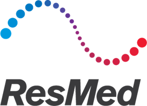
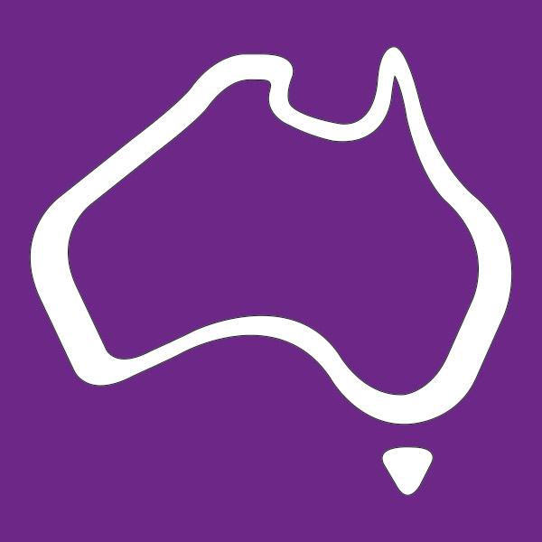

Commonwealth Bank of Australia
Software Engineer | Graduate Software Engineer
Mar 2023 - Current | Sep 2022 - Mar 2023
- Delivered new backend features in C# .NET REST APIs across two major projects, creating new digital experiences to over 8 million customers
- Took ownership of Java Kafka streamer and rapidly upskilled to push critical bug fixes before production release
- Generated Splunk queries to efficiently collate logs, reducing bug resolution time
- Parallelised slow downstream requests via async calls, resulting in 25% improvement in API response time
- Demonstrated commitment to code quality by elevating code coverage to over 90%
- Won 1st place out of 24 submissions for a feature-led pitch for the Commbank mobile app
Languages & Frameworks: C#, .NET Core/Framework, Java, Kafka
Tools: Git, GitHub, Azure, Splunk, TeamCity
Graduate Site Reliability Engineer
Feb 2022 - Sep 2022
- Provisioned a custom GitLab Helm chart on an AWS Kubernetes cluster that increased user capacity tenfold
- Configured a Jenkins CI/CD pipeline, optimising iteration time from 30 minutes to less than 5 minutes
- Streamlined onboarding process via Shell Scripting to automate software setup and created introductory labs for Golang, Docker, and Kubernetes, reducing onboarding time from 4 weeks to 5 days
- Built a Golang URL Shortener in a Docker container
Languages & Frameworks: Golang, Shell Scripting
Tools: AWS, Docker, Kubernetes, Git, GitHub, GitLab, Helm, Jenkins, NGINX

The University of New South Wales
Engineering Research Assistant
Sep 2021 - Feb 2022
- Modelled advanced signal processing algorithms in SATCOM networks using MATLAB, achieving 90% accuracy
- Produced a 50+ page report on literature review, algorithms, and analysis
Languages: MATLAB

ResMed
Electrical Engineering Intern
Dec 2020 – May 2021
- Conducted verification and debugging of electrical components for the AirSense 11 product
- Debugged and fixed broken PCBAs with a cumulative worth of $1000+
Languages: Python
The University of New South Wales
Developer
Feb 2020 - Sep 2020
- Developed a Java app that automated 270 speech recordings across 5 universities, saving weeks of manual work
- Automated file I/O, CRUD requests to Google API, backup scripts, and email operations
Languages & Frameworks: Java, JavaFX, Shell Scripting
Daiso
Retail Assistant
Aug 2019 - Nov 2020
- Managed $5000+ worth of daily sales, assisted customer enquiries, and exercised store opening and closing duties

Australian Electoral Commission
Assistant & Runner
May 2019
- Performed warehouse duties for the 2019 Australian Federal Election